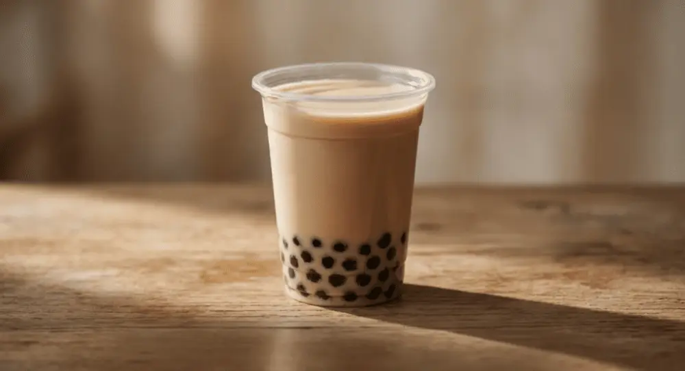
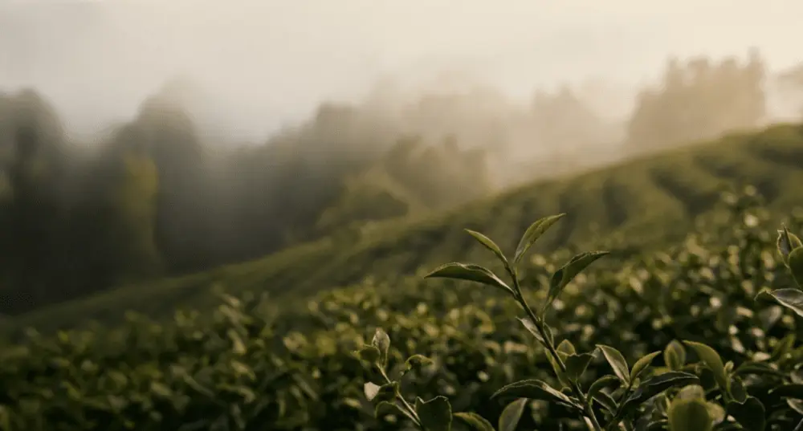
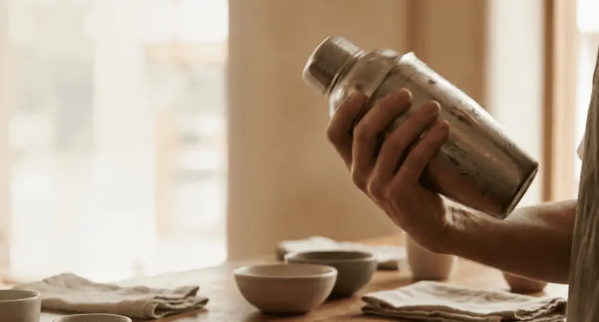

Articles / Tips & trends
How to Start a Bubble Tea Business: A Complete Guide for Beginners (2026)
2026-01-28 · Industry Trends, Sourcing, Industry Trends

Original public content from Yen Chuan. Product claims and specifications remain subject to confirmation by the company.
Starting a bubble tea business requires between USD 30,000 and USD 150,000 in startup capital, depending on location, shop format, and equipment choices. The global bubble tea market reached USD 3.96 billion in 2025 and is projected to hit USD 9.72 billion by 2035, according to Future Market Insights. This guide covers every step from business planning and sourcing boba tea supplies to licensing, location strategy, and daily operations — with real cost data and supplier benchmarks to help you launch with confidence.
Is a Bubble Tea Shop Profitable? The Numbers Behind the Hype
Bubble tea is one of the most financially attractive segments in the food and beverage industry. Gross profit margins typically range from 65% to 80%, with net margins of 10% to 20% after rent, labor, and overhead. By comparison, traditional restaurants average 3% to 5% net margins, and coffee shops manage 2.5% to 6.8%.
The raw ingredient cost for a standard 16oz milk tea sits around USD 0.42 to USD 0.79 per cup, while retail prices range from USD 4.50 to USD 7.00. That markup, combined with low staffing requirements and compact store footprints, makes bubble tea shops efficient profit generators. A shop selling 150 cups per day at an average price of USD 5.50 produces roughly USD 24,750 in monthly revenue, with gross profit around USD 17,000 before fixed costs.
Market growth further supports the business case. According to Grand View Research, the global bubble tea market was valued at USD 3.3 billion in 2025 and is expected to grow at a 12.7% CAGR through 2033. North America alone accounted for over 35% of global revenue in 2025, driven by Gen Z and millennial consumers who treat boba as both a beverage and a social experience.


How Much Does It Cost to Open a Bubble Tea Shop?
Startup costs vary significantly by business model. Here is a breakdown of the three most common formats:
| Business Model | Startup Cost Range | Best For |
|---|---|---|
| Kiosk / Cart | USD 15,000–50,000 | First-time entrepreneurs, test markets |
| Standard Shop (500–1,000 sq ft) | USD 75,000–150,000 | Community-focused operations |
| Flagship / High-Traffic Location | USD 150,000–400,000+ | Brand builders, franchise operators |
Major cost categories:
| Category | Estimated Cost (USD) | Share of Total |
|---|---|---|
| Rent & Build-Out | 20,000–150,000 | 30%–40% |
| Equipment (sealer, fructose dispenser, blenders) | 10,000–50,000 | 15%–25% |
| Initial Inventory | 3,000–10,000 | 5%–8% |
| Licenses & Permits | 800–3,000 | 1%–3% |
| POS System & Technology | 2,000–8,000 | 2%–5% |
| Working Capital (3–6 months) | 30,000–60,000 | 20%–30% |
Working capital is the most commonly underestimated line item. New shops need 3 to 9 months to build a consistent customer base. Without a financial buffer for rent, payroll, and utilities during this ramp-up period, many operators run into cash flow crises before reaching break-even.
How to Find Reliable Boba Tea Suppliers
Your supplier relationship directly affects drink quality, consistency, and customer retention. Boba tea suppliers provide the essential raw materials for daily operations: tea leaves, tapioca pearls, flavored powders, syrups, toppings, and packaging.
Taiwan dominates global bubble tea ingredient exports. According to Fortune Business Insights, Taiwan’s exports of pearl milk tea base ingredients surged 330% compared to 2018 levels. Bloomberg reported that tapioca pearls have become the number one food import from Taiwan to the United States. This export volume reflects the island’s complete supply chain ecosystem — from raw material processing and equipment manufacturing to franchise training and recipe development.
Key criteria for evaluating bubble tea suppliers:
| Factor | What to Look For |
|---|---|
| Certifications | HACCP, ISO 22000, HALAL, SGS verification |
| Product Range | Full lineup including tea leaves, tapioca pearls, syrups, powders, and packaging |
| MOQ Flexibility | Low minimums for first orders; sample programs for testing |
| Customization | OEM/ODM capability for private label development |
Request samples from at least two or three suppliers before committing. Test products in actual drink preparations, not just standalone tastings. Evaluate taste consistency across batches, shelf life performance, and how well ingredients integrate with your planned recipes.


Choosing the Right Location for Your Boba Shop
Location is the single most important variable in a bubble tea shop’s revenue trajectory. Foot traffic volume, demographic alignment, and competitive density all factor into the decision.
| Location Type | Monthly Rent (USD) | Advantage | Risk |
|---|---|---|---|
| College Campus Area | 1,500–3,500 | Dense Gen Z traffic, social media amplification | Seasonal dips during breaks |
| Shopping Mall | 3,000–8,000 | Consistent foot traffic, brand visibility | Rigid lease terms, fixed hours |
| Urban Commercial Street | 2,500–6,000 | Mixed office and tourist traffic | High competition |
| Suburban Neighborhood | 1,200–3,000 | Lower rent, loyal repeat customers | Longer brand-building period |
Before signing a lease, spend at least two weeks counting foot traffic at different times of day. Map competitors within a one-kilometer radius. Talk to neighboring businesses about seasonal patterns and construction plans that might disrupt access.
Bubble Tea Wholesale: Building a Stable Supply Chain
Wholesale bubble tea supplies encompass the recurring ingredient purchases that keep your shop running. This includes everything from tapioca pearls and tea leaves to syrups, flavored powders, cups, lids, straws, and sealing film.
Common wholesale items and reference MOQs from Taiwan suppliers:
| Item | Typical MOQ | Reference Price Range |
|---|---|---|
| Tapioca Pearls | 200–500 kg | USD 1.50–3.00/kg |
| Tea Leaves | 50–100 kg | USD 8–25/kg (varies by grade) |
| Fructose / Syrups | 100–200 kg | USD 1.00–2.50/kg |
| Flavored Powders | 50–100 kg | USD 5–15/kg |
Most Taiwanese suppliers offer reduced MOQs for first-time buyers and provide free samples (buyer covers shipping). When ordering internationally, you will need to choose between FOB (you arrange shipping from Taiwan port) and CIF (supplier arranges shipping to your destination port). FOB gives more control over logistics costs; CIF simplifies the process for newcomers.
Build a safety stock of at least two weeks’ worth of high-turnover ingredients. Tapioca pearls and fresh toppings require cold chain logistics, while powders and syrups need moisture-proof packaging. Verify your supplier’s export documentation — certificates of origin, ingredient declarations, and FDA Prior Notice (for U.S. imports) must be in order to avoid customs delays.
Licenses and Permits: What You Need Before Opening Day
Regulatory requirements vary by country, state, and municipality. In the United States, expect to secure the following before opening:
| Permit | Description | Timeline |
|---|---|---|
| Business License | Basic operating authorization from local government | 2–4 weeks |
| Food Handler’s Permit | Required for all staff handling food/beverages | 1–2 weeks |
| Health Department Permit | Passed through an on-site health inspection | 4–8 weeks |
| Sales Tax Permit | State-level authorization to collect sales tax | 1–2 weeks |
| Trademark Registration | Protects your brand name and logo | 6–12 months |
Start the application process at least three months before your target opening date. Health inspections require a completed build-out, so coordinate your construction timeline accordingly. Some municipalities also require fire safety inspections, signage permits, or food establishment plans before issuing final operating approval.
Menu Design and Daily Operations That Drive Repeat Business
A well-structured menu serves three functions: it controls food costs, maximizes average ticket size, and gives customers reasons to return.
Menu architecture:
Core products (60%–70% of the menu) should cover classic milk tea, fruit tea, and fresh milk series — these are your consistent sellers. Seasonal limited-edition items (20%–25%) create urgency and social media buzz. Premium toppings like boba pearls, jellies, popping boba, and cream tops are the most effective upsell lever, adding USD 0.50 to USD 1.50 per drink.
Key operating benchmarks:
| Metric | Healthy Range | Notes |
|---|---|---|
| COGS (Cost of Goods Sold) | 20%–30% | Ingredient cost as % of revenue |
| Labor Cost | 25%–32% | Payroll as % of revenue |
| Daily Cup Sales | 100–200+ | Break-even threshold for most formats |
| Average Ticket | USD 5–8 | Including topping add-ons |
Staff a 500–800 sq ft shop with one store manager and three to four part-time employees. Cross-train everyone on drink preparation, hygiene protocols, and customer service. During the first 90 days, track daily sales by product, time slot, and day of week to identify patterns and adjust staffing accordingly.


Why Global Boba Brands Source from Taiwan
Taiwan’s dominance in the bubble tea supply chain rests on three factors: four decades of product development expertise, a concentrated industry cluster, and internationally recognized food safety standards.
The island’s bubble tea ecosystem covers the full value chain — from tapioca starch processing and syrup manufacturing to equipment production and franchise consulting. Taiwanese suppliers typically hold HACCP, ISO 22000, and FSSC 22000 certifications, meeting import requirements for the EU, North America, and most Asian markets. This certification infrastructure gives buyers confidence in product safety and regulatory compliance, which is especially critical when building a brand that depends on ingredient consistency.
For entrepreneurs considering a franchise model, Taiwanese bubble tea franchise brands offer comprehensive packages. Gong Cha operates in over 50 countries. Chatime runs more than 2,500 locations worldwide. These systems typically include brand licensing, ingredient supply agreements, staff training, and operational SOPs — a turnkey approach that reduces the learning curve for first-time operators.
Sources
- Fortune Business Insights — Bubble Tea Market Report
- Grand View Research — Bubble Tea Market Size and Share
- Future Market Insights — Bubble Tea Market Trends 2025–2035
- Bloomberg — Bubble Tea Takes Over US as Top Taiwan Food Import
- Global Taiwan Institute — Brewing Soft Power: Taiwan’s Bubble Tea
- U.S. Small Business Administration — Business Licenses and Permits
Frequently Asked Questions
A basic kiosk setup starts at USD 15,000–30,000. A standard storefront in a moderate-traffic area requires USD 75,000–150,000, including equipment, initial inventory, permits, and three to six months of working capital. Premium locations can push costs above USD 200,000.
Taiwan is the global hub for boba ingredients. Search Taiwantrade.com or contact manufacturers directly. Look for suppliers with HACCP and ISO 22000 certifications, sample programs, and flexible MOQs for first-time buyers.
Gross margins range from 65% to 80%. After rent, labor, and overhead, net profit margins typically fall between 10% and 20%. Shops selling over 150 cups per day in well-chosen locations generally break even within 9 to 18 months.
Franchising offers brand recognition, proven systems, and supply chain access but costs USD 20,000–100,000 in franchise fees plus ongoing royalties. Independent shops require more upfront work on branding and SOPs but keep full control of pricing and profits.
At minimum, you need a business license, food handler’s permit, health department permit, and sales tax permit. Some states or cities require additional approvals such as fire safety inspections or specific food establishment plans. Begin applications at least three months before opening.
Taiwanese franchise brands typically provide brand licensing, initial ingredient supply, equipment packages, staff training, and operating manuals. Fees range from USD 15,000 to USD 80,000 depending on brand tier. Contract terms usually span three to five years with renewal options.
Core equipment includes a cup sealing machine, fructose dispenser, commercial blender, tea brewer, refrigerator, ice maker, and shaker cups. Budget USD 10,000 to USD 50,000 depending on automation level. Automated tapioca pearl cookers and smart POS systems are increasingly standard.
Author: Yen Chuan Marketing Team
With over 40 years of experience in Taiwan’s bubble tea industry, our team has supplied ingredients and equipment to thousands of beverage operators worldwide. From first-time entrepreneurs placing their initial sample order to established chains managing multi-country supply chains, we have supported every stage of growth. One lesson we consistently see play out: ingredient quality is the foundation of customer loyalty. When budgets are tight, cut back on interior design before you compromise on raw materials. Your drinks are your brand.
Planning to launch a bubble tea business? Whether you need ingredient sourcing, product development, or OEM customization, the Yen Chuan team is ready to help you build a reliable supply chain from Taiwan to your market.